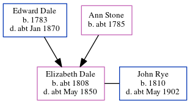

Elizabeth Rye (née Dale) c1808 - c1850
[ Home ] | [ Calendar ] | [ Surnames Index ] | [ Census Index ] | [ Family History ]The child of Edward Dale (an agricultural laborer) and Ann Stone, Elizabeth Dale, the four times great-aunt of Nigel Horne, was born c. 1808 and baptized in Canterbury, Kent, England on Nov 20, 1808. She married John Rye at St Marys, Chartham, Kent, England on Oct 13, 18352.
She died c. May 1850 in Bridge, Kent, England1 and was buried in Ickham, Kent, England on Jun 9, 1850.
Parents
- Edward was born in 1783
- Ann was born c. 1785
Citations
- England & Wales deaths 1837-2007 - Findmypast
- England Marriages 1538-1973 - Findmypast
Media
Kent, Canterbury Archdeaconry marriages 1538-1928 - GBPRS/CANT/M/97109299/2
England Marriages 1538-1973 - R_848403415/2
England Marriages 1538-1973 - R_848405560/2
England & Wales deaths 1837-2007 - BMD/D/1850/2/AZ/000629/108
Family Tree
Generated by ged2site. Last updated on Jun 11, 2024